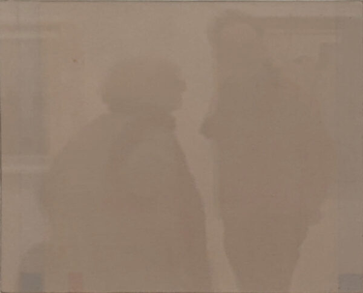
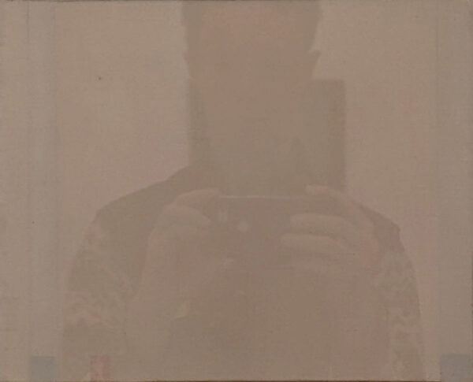
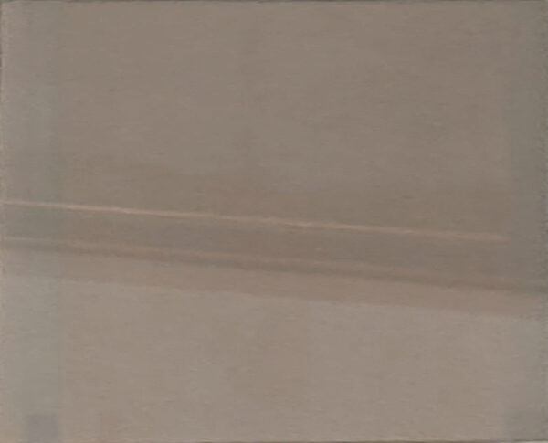
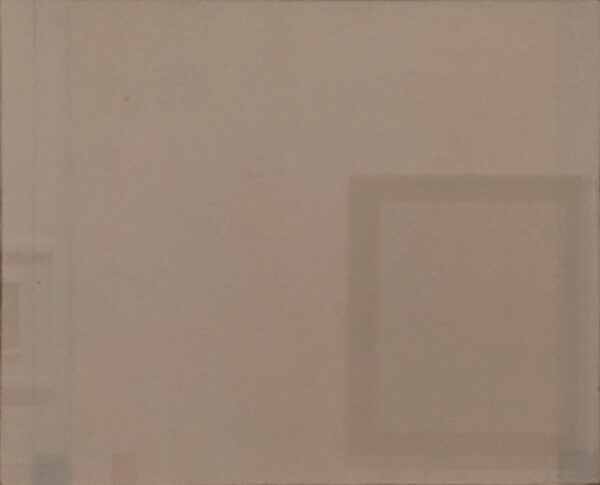
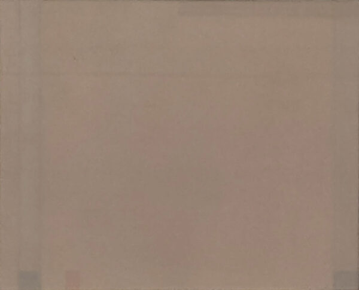
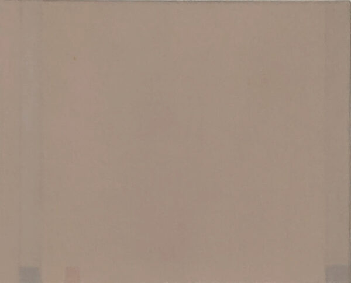

Six Reflections on Calderara

I lean forward to get a better view of the painting, but the couple behind me is in the way.

When I stand in front of the painting, my own obscuring figure fills the frame.

Perhaps the artist, who throughout his work played incessantly with reflections, would be tickled that these pictures are so bedeviled.

Or does the painting, in fact, have the upper hand as it absorbs the gallery into its world of just-barely-perceptible variations of taupe?

If I just bend my knees and lean to the side a little further, perhaps I can shunt the air vent on the wall behind me up and out of the picture.

Sitting at the end of the bench in the middle of the room, I can see the painting at last.
It’s better in person, I promise.